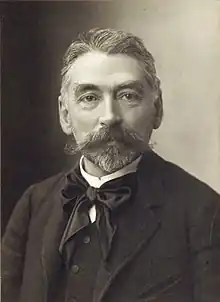
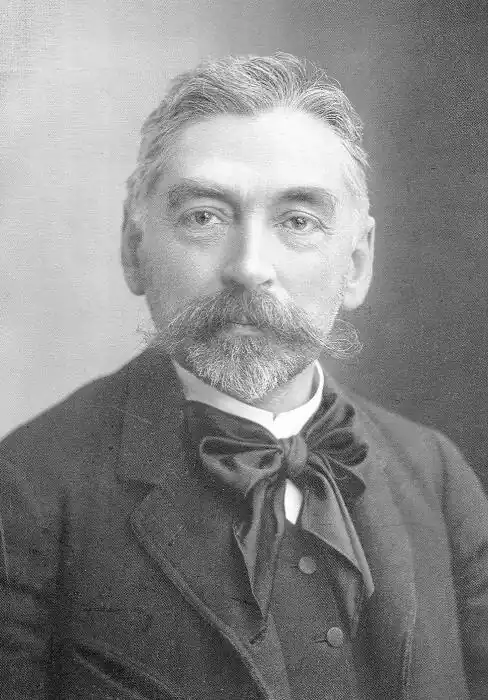
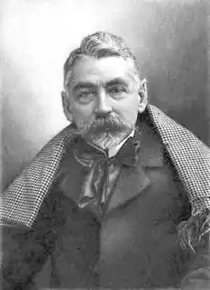

(17.03.1842 — 09.09.1898)
Французький поет і письменник, голова символістської школи. Народився в сім'ї Нуми Малларме, служашего Управління у справах власності. У п'ятирічному віці втратив матір; виховувався батьками. Ріс сприйнятливим дитиною. З 1852 навчався в релігійному пансіоні в Отейе, з 1853 – у ліцеї Санса; перебування там виявилося для нього болісним. Ще більшою мірою став відчувати самотність після смерті своєї тринадцятилітньої сестри Марії в 1857 році.
У 1860 році отримав диплом бакалавра. Всупереч бажанню батька, відмовився від кар'єри чиновника: він уже знав, що йому судилося бути поетом. У 1862 провів кілька місяців у Лондоні, де вдосконалив своє знання англійської. В 1863 році, повернувшись до Франції, почав викладати англійську мову в ліцеї Турнона. З цього часу його життя поділилася на дві частини: з одного боку, учительство заради скромного заробітку для забезпечення своєї родини – після Турнона у Безансоні (1866-1867), Авіньйоні (1867-1871), Парижі (1871-1894); з іншого, поетична творчість. Його перші юнацькі вірші, написані між 1862 і 1864, несуть явну печатку впливу Шарля Бодлера і Едгара По. У 1864 познайомився в Фредеріком Містралем, Катуллом Мендесом, Матіасом Вільє де Ліль-Аданом. Захопився поезією Теофіля Готьє, засновника Парнаського школи (Див. також ПАРНАС); став писати в її дусі. У 1865 представив на суд Теодора де Банвіль, одного з провідних парнасцев, поему Післеполудневий відпочинок фавна (L Après-midi d'un faune), витончену і чуттєву эклогу, пронизану язичницькою радістю буття. Перша публікація (десять віршів) відбулася 12 травня 1866 році в збірці "Сучасний Парнас", що означало визнання його Парнаського школою. Потім настав період пошуку нових засобів поетичного вираження (1868-1873); в кінці 1860-х написав фантастичну філософську казку Igitur, або божевілля Эльбенона (Igitur, ou la Folie d Elbehnon), видану лише в 1926; почав роботу над драмою у віршах Іродіада (Hérodiade), яка, однак, залишилася незавершеною; у другому випуску "Парнасу" (1871) був надрукований її фрагментарний варіант. На початку 1870-х розчарувався в Парнаського школі і примкнув до декадентів; Похоронний тост (Toast funèbre), написаний у зв'язку зі смертю Т. Готьє в 1872, ознаменував перехід до нової поетики. У 1872 познайомився з Артюром Рембо, в 1873 – з Едуардом Мане, в 1874 – з Емілем Золя. Співпрацював у журналі "Мистецьке і літературне відродження", де у 1874 опублікував переклад поеми Ворон Е. з ілюстраціями Е. Мане, і в "Журналі нового світу", де надрукував низку нарисів та статей. У 1874 видавництво А. Лемерра відмовилася опублікувати Післеполудневий відпочинок фавна; він побачив світло тільки в 1876. У 1876 написав сонет Гробниця Едгара По (Le Tombeau d Edgar Poe). У 1877 випустив шкільний підручник Англійські слова (Mots anglais), а в 1880 – підручник з міфології Античні боги (Dieux antiques), адаптовану французьку версію книги Д. У. Коксу. З 1880 почав організовувати "літературні вівторки" у своїй квартирі на Римській вулиці; в них брали участь Гюстав Кан, Сен-Поль Ру, Анрі де Реньє, Поль Клодель, Поль Валері, Андре Жид та П'єр Луїс. Придбав популярність у літературних колах, не в останню чергу завдяки П. Верлену, причислившему його до "проклятих поетів" (в нарисах Прокляті поети, 1884), і Ж.-К. Гюїсманса, який у романі Навпаки (1884) провів (вустами свого головного героя Дез Эссента) ґрунтовний аналіз його ранніх віршів. До середини 1880-х став лідером поетів-декадентів, які взяли в 1886 ім'я "символістів". У 1887 році видав збірку Поезії Стефана Малларме (Poésies de Stéphane Mallarme), в 1888 – переклади поем Е.. У той же час, поряд з символістськими "темними" віршами, складав невеликі і зрозумілі вірші з різних приводів; опубліковані під назвою " Вірші з нагоди (de Vers circonstance) лише в 1920 році. У 1890 виступив в Бельгії і в Парижі з лекціями про творчість М. Вільє де Ліль-Адана. У 1894 опублікував збірку віршів і поем у прозі (Vers et prose). В тому році залишив службу і цілком присвятив себе поезії; поставив за мету створити універсальну досконалу Книгу, яка б дала вичерпне і унікальне пояснення світу. В 1896 році, після смерті П. Верлена, був обраний "принцом поетів". У 1897 р. опублікував експериментальну поему Удача ніколи не скасує випадку (Un coup de dés jamais-abolira le hasard) у вигляді однойдлинной фрази без знаків пунктуації, надрукованій сходами на розвороті двох сторінок шрифтом різного розміру. У тому ж році випустив серію статей (Криза поезії, Музика і література та ін) під загальною назвою Бредні (Divagations), де висловив свої думки про занепад літератури і необхідності відновити її колишню сакральне значення. Помер у Парижі 9 вересня 1898. Велика частина текстів С. Малларме та його листування були опубліковані після його смерті. С. Малларме прийшов у французьку культуру в свій час, коли вичерпність старих поетичних форм і потреба в нових стали більш, ніж очевидні. Йому випало очолити символистское рух, в якому отримало своє теоретичне оформлення нове художнє мислення, яке рішуче реформував поетична мова і просодическую систему і відкрило шлях сучасної французької літератури. С. Малларме радикально переосмислює призначення поезії: вона повинна не описувати і не вчити, а укладати в собі щось сверхреальное. "Поезія, – говорить він, – це передача за допомогою людської мови, повернутого до свого субстанциональному ритму, потаємного сенсу всіх аспектів існування: вона обдаровує справжністю наше перебування на землі і є єдиною духовною завданням". Поет – посередник між людьми і таємницями всесвіту. Привідкрити завісу трансцендентного він може за допомогою слів-символів, за якими передбачається ця інша реальність. У символічному універсумі змінюється і призначення мови: він втрачає свою пряму комунікативну функцію і починає грати іншу – сугестивну роль (не називати, а викликати асоціації). Понятійна структура слова тоншає до межі. На перший план виступає його звукова складова. Символізм бере "у музики її добро" (П. Валері). Розглядаючи поезію як носительку якоїсь потаємної сутності, С. Малларме повертає їй колишній сакральний сенс. Поет стає жерцем, поема – заклинанням, а слова – елементами нескінченної мелодії. Мова, недоступний звичайним смертним, знаходить свою силу стихії магічних ритмів. Така поезія вимагає від поета відречення від усього буттєвого і мирського, тобто жертовності і творчого самотності. С. Малларме не тільки формулює основні принципи символізму, але і прагне реалізувати їх у своїй поетичній практиці. Він намагається існувати в якомусь " чистому і автономному просторі і навіть "створити для себе майже повністю власний язик" (П. Валері). Все, що зазвичай, що подобається і зрозуміло всім, викидається з його творчості: ніякого красномовства, ніякої розповідності, ніяких максим, жодного способу, вже кимось винайденого. Тут рідкісні слова і слова в їх архаїчному значенні (повернення до "первісного джерела"), незвичайний ритм, зрушена цезура, неточна рима, переноси (enjambement), зруйнований або ускладнений синтаксис, намір зробити з вірша "тотальне нове слово", чуже звичайній мові. Відкриття нових можливостей поетичного таїло в собі і небезпеку: неминуче виникала перешкода між автором і читачем. На закиди в герметичності і "темряві" С. Малларме відповідав, що поезія і повинна містити в собі загадку, а якщо її не розгадують, то це не означає, що вона "темна", а лише свідчить про непідготовленість читача. Пошук досконалої форми вираження, боязнь "забруднити" чистий аркуш паперу банальними ідеями і мовними кліше були, ймовірно, причиною того, що власне символистское спадщина С. Малларме виявилося скромною за обсягом. Його Іродіада так і залишилася незакінченою. Не здійснилась і головна його мрія – створити універсальну Книгу, яка б зафіксувала Абсолютна. Він не виконав найвищий обов'язок поета-символіста – дати "орфическое" пояснення Землі.